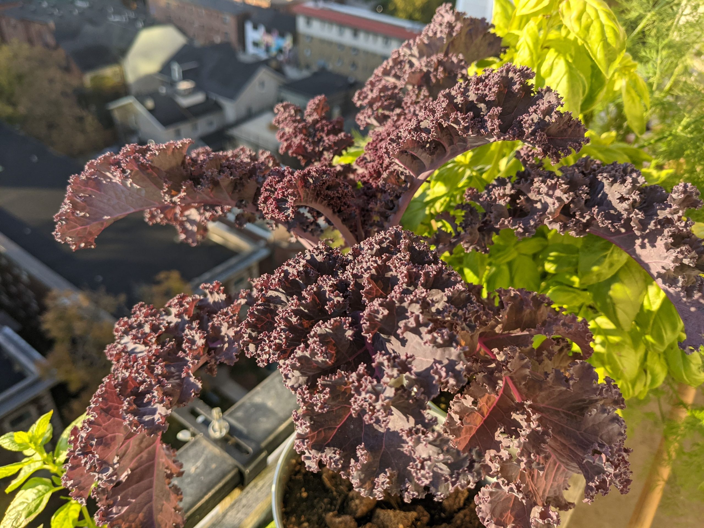
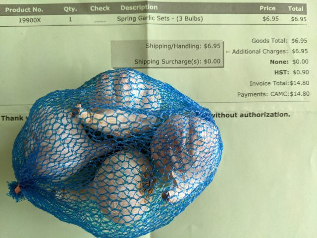

プランターで育てる春植えにんにく栽培に挑戦してみたら
毎年、送ってくれるのを楽しみにしているカタログがある。
Veseysという種や球根を販売しているカナダの会社のカタログで、オンラインでも見れるが、無料だし、ふせんを貼ったり書き込みをしたいのであえて送ってもらっている。ケールの種ひとつとっても種類が豊富で、普段行くスーパーで売っていない種類のケールを育てることができるのは、ガーデニングの醍醐味。カタログのページをめくりながら、育成日数や育てやすさなどを比較検討して今年は何を植えようかと夢をふくらませつつじっくりと考えるのが楽しい。
↓紫ケール 夏の間はみどりがかっていたが、寒くなると鮮やかな紫色になる

そして目についたのが、春植えのにんにくの球根。通常にんにくは秋に植えて初夏に収穫するが、春植えでもいいのならやってみたいと思った。カタログの説明書きには、育て方は簡単で、狭いスペースで大丈夫、90日から１００日で収穫できる、とのことだった。
カタログには送料無料のコードが記載されていたので、球根自体は３つで6.95ドルでちょっと高いとおもったが、ネットでオーダーした。ところが、後で手数料が追加されて送られるという事態になってしまった。総額１４．８ドル。しかも、球根の小さいことにもびっくり。だから４つ入れてきたのだろうけど、大きいのが３つのほうが良かった。これでは、お金をかけないガーデニングという私のポリシーに反しているではないか。

気を取り直して植えたのが春先。にんにくはいったん植えてしまえば楽な放置系の野菜である。相変わらず続けている自家製コンポストのおかげもあってすくすく育ち、気温が低くなって葉が黄色くなったのを見はかり収穫した。
こうして、春に植えたにんにくは、秋に無事収穫できた、のだが、収穫できたにんにくは、とーっても小さいミニサイズ。鉢植えだったからか、もとの球根よりさらに小さい。 水に浸けてむきやすくしたが、皮もむきずらいことこの上ない。
地植えだったらもっと大きくなったのかもしれないが、もとの球根より大きいものが収穫できるということはあるのだろうか。コスパを考えると、スペースに限りがあるベランダでのプランター栽培には向かないということがよーく分かった。
15ドル分のもとは取れなかった結果となった。もう手は出すまい。